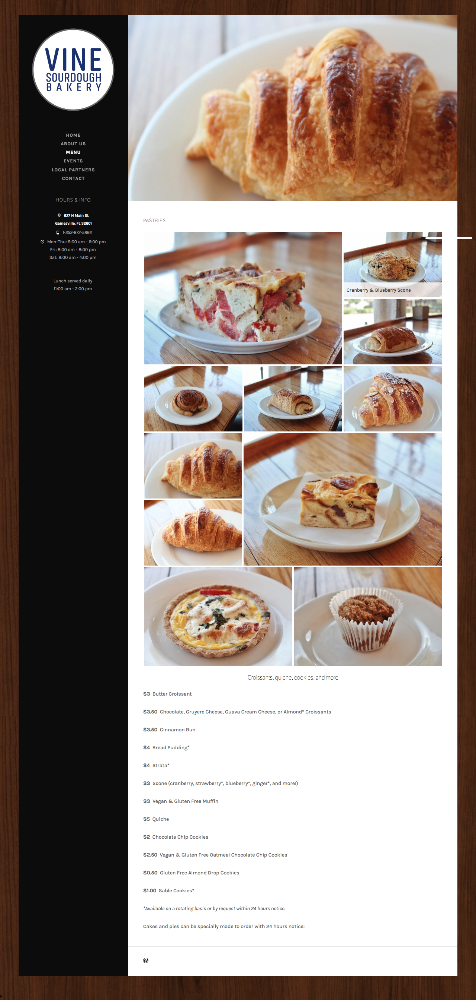
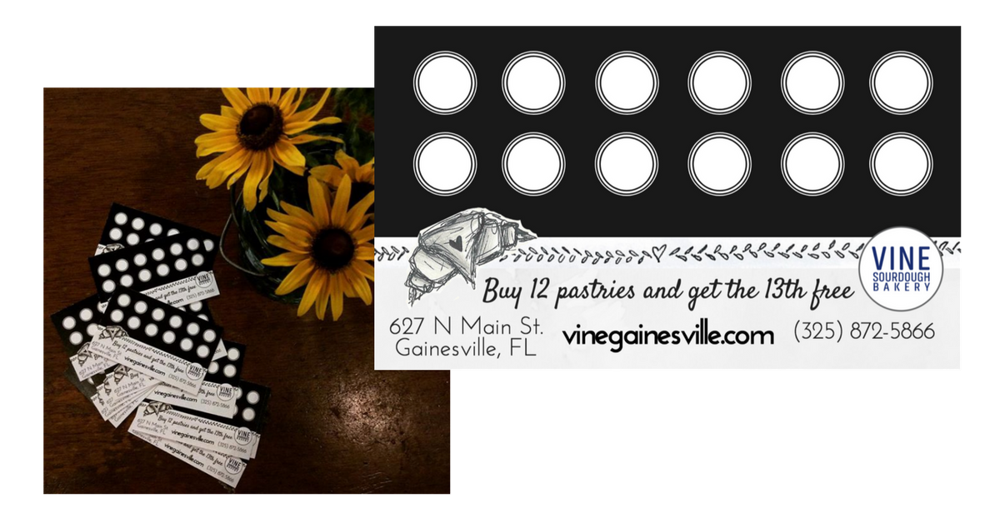

Vine Sourdough Bakery
A simple Wordpress website created for a local bakery in Gainesville, FL.

About the Project
This website was created within the Wordpress.com platform. Most original work went into designing webpage layout and managing
print as well as social media content.
Here are the services I provided during my employment:
- Website redesign with new photos of inventory and updated contact forms
- Social media management (Instagram & Facebook advertising)
- Loyalty cards
In May 2015, I joined the Vine team as a front-of-house member. However, during the interview, I expressed to one of the
co-owners, Teresa, that I had experience in web design and that if they wanted, I would love to have
the opportunity to practice my skills by updating their online presence. At the time, it was a simple
Wordpress blog with event posts, but no extensive business info, such as a menu or about page. She
agreed and I was able to practice a lot of creativity and earn substantial professional experience.
I didn't expect much to come from this offer, but I feel incredibly thankful for this trust and
experience that Vine gave me. As a result, I poured a lot of my energy into creating beautiful things
to help their business flourish. I think the designs I created for Vine are indicative of the passion
I feel for what I do and what I'm capable of when I can fully support a business that I love.
Pastry Menu Page
I took photos of the pastries and other common inventory items to add to the online menu as well as social media posts (Instagram/Facebook). Here is the pastry menu page on their website.
Social Media Management
Below are screen captures of several social media posts that I photographed for Vine. I also included a screen capture of the video header created for their Facebook page, but to experience the video itself, you must visit their page.
Loyalty Cards
Along with a website re-design, I created some simple rewards cards to incentivize repeat business. Many of our regulars were thankful for this decision and loved bringing it in each time to get their free pastry!